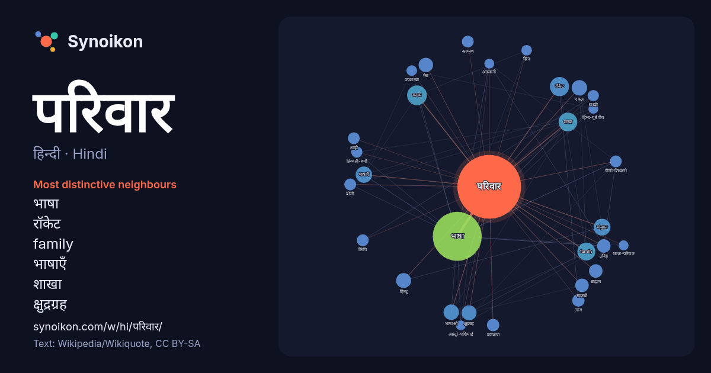

हिन्दी · Hindi · popular word
परिवार
“family” · The words found around it in 1010 instances from Hindi Wikipedia, Wikiquote.

Most distinctive neighbours
- भाषा 47×
- रॉकेट 25×
- family 23×
- भाषाएँ 18×
- शाखा 18×
- क्षुद्रग्रह 17×
- मेरा 14×
- द्रविड़ 13×
- हिन्दू 12×
- एकल 12×
- लांग 12×
- सदस्य 12×
- चीनी-तिब्बती 11×
- भाषाओं 11×
- कायस्थ 11×
- ब्राह्मण 10×
- तिब्बती-बर्मी 9.9×
- ब्राह्मी 9.7×
- कल्याण 9.7×
- उपशाखा 8.8×
× = how many times more often than in general Hindi Wikipedia text.
Most frequent neighbours
- भाषा 171
- भारत 39
- भारतीय 32
- सदस्य 28
- रॉकेट 26
- शाखा 25
- family 23
- संयुक्त 20
- जन्म 19
- भाषाएँ 19
- लोग 19
- एकल 17
- नाम 17
- बड़ा 17
- भाषाओं 17
- क्षुद्रग्रह 16
- हिन्दू 16
- जिसमें 15
- प्रमुख 15
- मेरा 15
In context
- परिवार (family) साधारणतया पति, पत्नी और बच्चों के समूह को कहते हैं, किंतु दुनिया के अधिकांश भागों में वह सम्मिलित वासवाले रक्त संबंधियों का समूह है जिसमें Wikipedia snippets · परिवार
- आपस में सम्बंधित भाषाओं को भाषा-परिवार कहते हैं। कौन भाषाएँ किस परिवार में आती हैं, इनके लिये वैज्ञानिक आधार हैं। इस समय संसार की भाषाओं की तीन अवस्थाएँ Wikipedia snippets · भाषा-परिवार
- (या भारोपीय) भाषा-परिवार संसार का सबसे बड़ा भाषा परिवार (यानी कि सम्बंधित भाषाओं का समूह) हैं। हिन्द-यूरोपीय (या भारोपीय) भाषा परिवार में विश्व की सैंकड़ों Wikipedia snippets · हिन्द-यूरोपीय भाषा-परिवार
- नेहरू–गांधी परिवार भारत का एक प्रमुख राजनीतिक परिवार है, जिसका देश की स्वतन्त्रता के बाद भारतीय राष्ट्रीय कांग्रेस पर करीब-करीब वर्चस्व रहा है। नेहरू परिवार के Wikipedia snippets · नेहरू–गांधी परिवार
- विश्व के सबसे चार प्रमुख भाषा परिवारों की भाषाएँ बोली जाती है। सामान्यत: उत्तर भारत में बोली जाने वाली भारोपीय भाषा परिवार की भाषाओं को आर्य भाषा समूह, Wikipedia snippets · भारत के भाषाई परिवार
- ब्राह्मी परिवार उन लिपियों का परिवार हैं जिनकी पूर्वज ब्राह्मी लिपि है। इनका प्रयोग दक्षिण एशिया, दक्षिणपूर्व एशिया में होता है, तथा मध्य व पूर्व एशिया Wikipedia snippets · ब्राह्मी परिवार की लिपियाँ
- चित्र:Familytree.gif बिड़ला परिवार भारत के सबसे बड़े व्यावसायिक एवं औद्योगिक परिवारों में से एक है। इस परिवार के अधीन वस्त्र उद्योग, आटोमोबाइल्स, सूचना Wikipedia snippets · बिड़ला परिवार
- … ाएँ पूर्वी यूरोप और भूमध्य सागर से लेकर साईबेरिया और पश्चिमी चीन तक बोली जाती हैं। कुछ भाषावैज्ञानिक इन्हें अल्ताई भाषा परिवार की Wikipedia snippets · तुर्की भाषा परिवार
More Hindi words
- इतिहास
- ईश्वर
- कार्य
- कुत्ता
- गर्मी
- गाना
- घंटी
- घड़ी
- घोड़ा
- चाय
- चित्रकला
- छाया
- जंगल
- जलवायु
- जीवन
- तूफ़ान
- दर्पण
- द्वीप
- नक्षत्र
- नमक
- पहाड़
- पानी
- पैसा
- प्रकृति
- बगीचा
- बिल्ली
- भाषा
- भोजन
- माता
- मानचित्र
- मृत्यु
- मौन
- रेगिस्तान
- रेलगाड़ी
- रोटी
- वर्षा
- विज्ञान
- शक्ति
- शरद
- शहद
- शहर
- सड़क
- सत्य
- समय
- सर्दी
- सेतु
- स्वर्ण
- स्वास्थ्य
- हृदय
Precomputed on 2026-10-09 with default settings (±5 words, medium corpus). The interactive map can refresh it with live data.